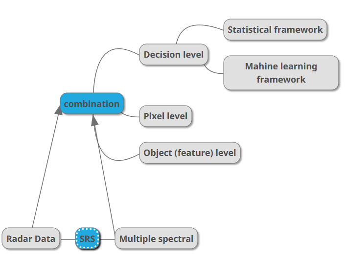

3 Week 3 - Remote sensing data
In this week’s learning diary, we try to handle
3.1 Summary:
3.1.1 Different Sensors
Across track scanners: Mirror reflects light onto 1 detector. For example, Landsat dataset are captured by this sort
Along track scanners: Basically several detectors pushed along. E.g., Quickbird, SPOT
3.1.2 Geometric Correction
RS data could include image distortions introduced by: View angle, topography, wind and rotation of the earth
We identify Ground Control Points (GCP) in distorted data to match them with local map, correct image, or GPS data from handheld device, but these reference images could also contain distortions and imprecisions.
RMSE is adopted here to measure fitness between images. Use GCPs to minimise RMSE.
Doing geometric correction can shift the original image, so we want to re-sample the final raster by using Nearest Neighbour, Linear, Cubic, Cubic spline re-samplers
3.1.3 Atmosphric Correction
According to Jensen (1986), two factors contribute to environmental attenuation: Atmospheric scattering, topographic attenuation.
There are unnecessary and necessary atmospheric corrections:
necessary ones are:
Biophysical parameters needed (e.g. temperature, leaf area index, NDVI)
E.g. .. .NDVI is used in the Africa Famine Early Warning System and Livestock Early Warning System
Using spectral signatures through time and space
Absorption and scattering can create the haze, i.e. reduces contrast of image.
Scattering can create the “adjacency effect”, radiance from pixels nearby mixed into pixel of interest.
3.1.4 Orthorectification Correction
This is a subset of georectification, i.e. giving coords to an image. Particularly Orthorectification means removing distortion so pixels can appear being viewed at nadir (straight down). This requires the support of an Elevation Model to calculate the nadir view for each pixel on a sensor geometry.
To do this: cosine correction, Minnaert correction, Statistical Empirical correction, C Correction (advancing the Cosine). Need radiance (DN to TOA) from sloped terrain, Sun’s zenith angle, Sun’s incidence angle - cosine of the angle between the solar zenith and the normal line of the slope. Latter two found in angle coefficient files (e.g. Landsat data ANG.txt).
3.1.5 Rdiometric Correction
Corrections to raw satellite imagery can be performed using a method called Dark Object Subtraction (DOS). The logic is that the darkest pixel in the image should be 0 and any value it has is due to the atmosphere. To remove the atmospheric effect, the value from the darkest pixel is subtracted from the rest of the pixels in the image. The calculation involves converting the Digital Number (DN) to radiance, computing the haze value for each band (but not beyond NIR), and subtracting the 1% reflectance value from the radiance. The calculation requires values such as mean exoatmospheric irradiance, solar azimuth, Earth-sun distance, and others, which can be found in sources such as Landsat user manuals.
3.1.6 Joining data sets
Also known as Mosaicking: We feather two images, creating a seamless mosaic, where the diving lien is called seamline.
3.1.7 Image Enhancements
Image stretch, Band ratioing, Normalised Burn Ratio, Edge enhancement, Filtering, PCA, Image fusion (see application) etc.
3.2 Application - Discussing image fusion in one literature

From literature we delve in the nuances of levels on which we perform image fusion to acquire better results. The integration methods vary as the levels vary (Schulte to Bühne and Pettorelli 2018).
Satellite remote sensing (SRS) can be derived from Multispectral sensors and radar sensors.
Multispectral sensors are passive, merely receiving electromagnetic waves reflected from surface, usually used to reflect chemical properties (such as nitrogen or carbon content and moisture). Usually produces data with comparatively low spatial resolution
Radar ones emit electromagnetic radiation and measure the returning signal, responding to the three-dimensional structure of objects, being sensitive to their orientation, volume and surface roughness. Usually produces data with comparatively high spatial resolution
3.2.1 Image fusion:
1. decision-level (SRS integration), where separate predictors are used to estimate a parameter of interest.
2. object-level (feature-level). unit: multi-pixel objects. (1) using radar and multispectral imagery is input into an object-based image segmentation algorithm, or (2) segmenting each type of imagery separately before combining them. multi-pixel objects
3. pixel-level (Observation-level), where pixel values are combined to derive a fused image with new pixel values, either in the spatial or the temporal domain.
(2. and 3. derive entirely new predictors.)

Schematic overview of multispectral-radar SRS data fusion techniques. The parameter of interest can be a categorical variable, like land cover, or a continuous variable, like species richness. In pixel-level fusion, the original pixel values of radar and multispectral imagery are combined to yield new, derived pixel values. Object-based fusion refers to (1) using radar and multispectral imagery is input into an object-based image segmentation algorithm, or (2) segmenting each type of imagery separately before combining them. Finally, decision-level fusion corresponds to the process of quantitatively combining multispectral and radar imagery to derive the parameter of interest (by e.g. combining them in a regression model, or classification algorithm)
3.2.2 Implementation Approaches

pixel-level
- Component substitution techniques: such as principal component analysis (PCA), Intensity-hue-saturation (IHS).
- PCA is the only pixel-level image fusion technique that cannot be applied to imagery with different spatial resolutions, and the only that allows unlimited image numbers.
- IHS fusion. Three images with lower spatial resolution (typically multispectral data) are integrated with a single image with high spatial resolution (typically radar) to retain the radiometry but increase the spatial resolution of the former. Facilitate visual interpretation by combining resulting images into a single RGB image.
- Multi-resolution analysis, such as **Wavelet transformation. Decompose multispectral and radar imagery into their respective low- and high-frequency components
- Arithmetic fusion techniques: such as the Brovey transform algorithm. Unlikely to be appropriate for multispectral-radar SRS image fusion.
Object-level: Based on brightness and intensity values of each pixel, as well as its spatial context, objects such as lines, shapes or textures are extracted.
1. image segmentation: Demands that multispectral and radar SRS images are with the same spatial resolution
2. *extracting objects separately and combining in a feature map*
Object-based fusion reduces all multispectral and radar information into a single layer of discrete objects, which are often relatively easy to relate to ecological features.
Decision-level fusion: Quantitative decision-making frameworks—such as a regression, a quantitative model or a classification algorithm.
3.3 Reflection
Data correction, Data fusion and Image enhancement SRS data fusion can increase the quality of SRS (Satellite Remote sensing)-derived parameters for application in terrain detection, urban analysis, ecology and conservation (Schulte to Bühne and Pettorelli 2018). It is thus important to explore how best to capitalise on recent technological developments and changes in SRS data availability. It is exctiing to apply solid machine learning methods to this area and it is marvelous to see the progress reflected by the increasing number of software supporting this application. The improvement of image quality enables new research designs in ecology and conservation areas and reignite previously greyed-out options.
The application of data correction, data fusion, and image enhancement techniques to SRS data can greatly improve the accuracy and reliability of SRS-derived parameters, which can then be used in various fields, including terrain detection, urban analysis, ecology, and conservation. With the rapid advancements in technology and the increasing availability of SRS data, there is a growing opportunity to leverage the latest machine learning techniques in this area. The development of new software tools to support these applications is a testament to the progress being made in this field. By enhancing the quality of the SRS data, researchers are able to design more robust and informative studies, unlocking new insights and avenues for exploration in ecology and conservation. This, in turn, has the potential to lead to breakthroughs and innovations in these fields, making a significant impact on the world around us.